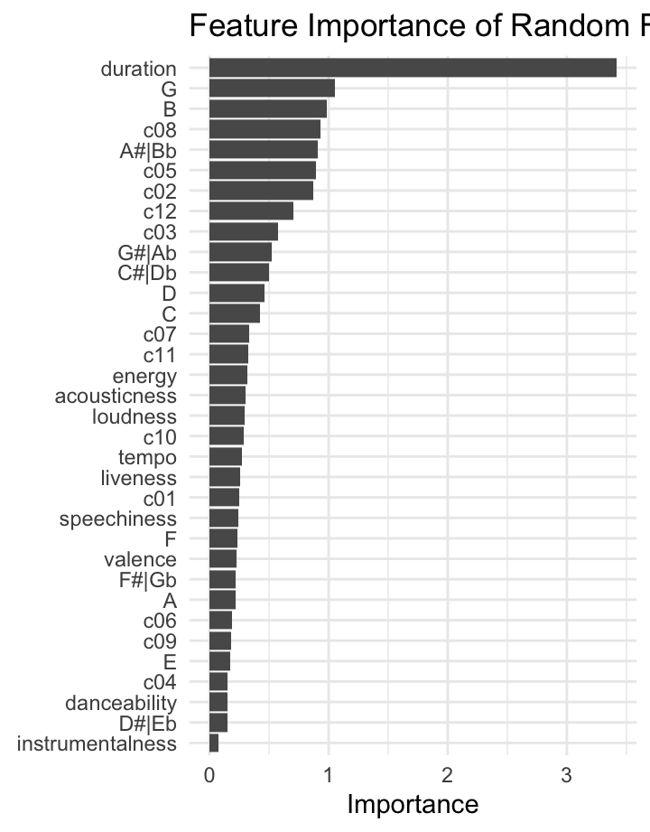
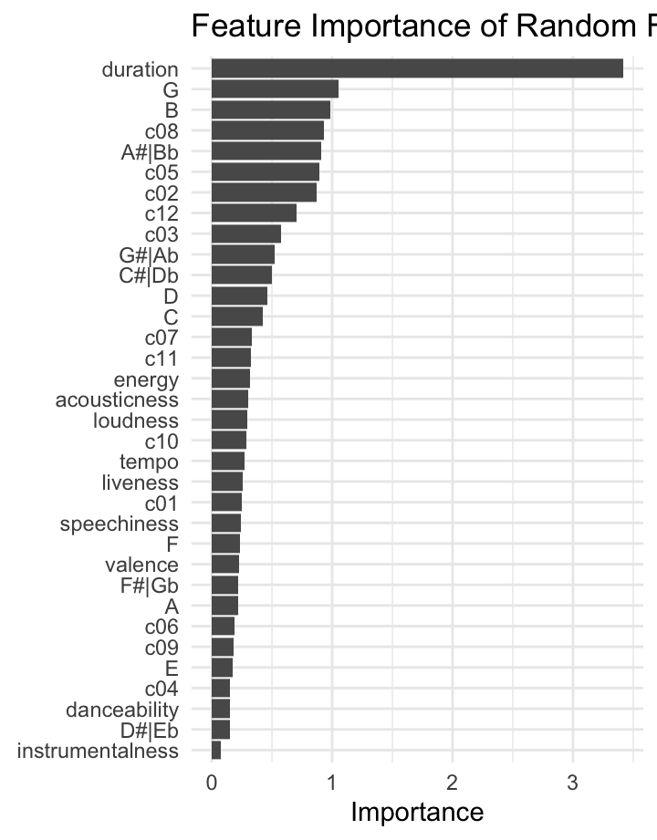

Corpus
Column
Explanation of corpus
As an international student from South Korea, my passion for K-pop extends beyond the contemporary music of my time to include that of the preceding millennium. Over the years, I have observed transformative changes in K-pop, influenced by advancements in production techniques and the forces of globalization. Notably, the growing collaborations between K-pop and Western artists have resulted in a fusion of diverse musical genres. In particular, I anticipate Millennium K-pop and K-pop ON! playlists to reveal distinct differences in musical components, including the tempo and rhythm, instrumentation trends, and melodic content. Upon reviewing the Spotify-curated playlists, I can conclude that both collections feature tracks that defined their respective eras. It is also important to acknowledge that both playlists maintain consistency by exclusively featuring music from K-pop groups without incorporating other genres like K-hip-hop or K-indie. However, a notable difference lies in the playlist sizes; the Millennium K-pop playlist consists of 100 tracks, while K-pop ON! features 50 tracks. For a more balanced comparison, I expanded the K-pop ON! playlist to include more tracks released between 2023 and 2024. Both playlists also have a popularity threshold, with tracks requiring to exceed 50 for K-pop ON! and 40 for Millennium K-pop, ensuring that the tracks are representative of their respective time frames. In the end, my objective is to deepen my understanding of how K-pop has evolved by comparing the two playlists on Spotify, each representing different temporal frames - the millennium and the present.
Column
Exploration
Column
Chart A
Chart B

Column
How does the use of pitches differ between Standing Next to You (2023) and Tell Me (2007)?
In exploring the relationship between danceability and tempo within the playlists K-pop ON! and Millennium K-pop, it is evident that while no strong correlation exists between the two variables, danceability tends to increase with higher tempo. Additionally, the color-coded points on the scatter plot reveal that current K-pop tracks exhibit significantly higher popularity compared to tracks in the Millennium playlist. However, the correlation between track popularity and danceability remains unclear, as no definitive relationship has been established.
For a more detailed comparison between the two playlists, histograms were created to visualize the distribution of danceability and tempo. While danceability values remain relatively similar between the two playlists, there is a notable shift in tempo. In the Millennium playlist, there is a distinct preference for a specific tempo, whereas contemporary tracks display a more diverse range, resembling a more symmetrical distribution. Despite this difference, both playlists share a similar mode tempo of 120~130 beats per minute (bpm). One reason for this preference is that producers tend to adhere to the mainstream tempo that have previously gained popularity. Moreover, in the contemporary era of globalized music, K-pop producers have increased access to a wider range of musical styles via streaming platforms, enabling them to draw inspiration from different genres, such as Western music. As a result, modern K-pop consists of a broader spectrum of tempos, in contrast to the singular tempo preference observed in the Millennium era.
Chromagram
Column
Comparsion of two chromagrams
Column
How does the use of pitches differ between Standing Next to You (2023) and Tell Me (2007)?
When examining the chromagrams of two highly popular tracks from different playlists, the differences between the two become evident. Standing Next to You by Jungkook prominently features the pitch classes C#/Db, D, and A, while Tell Me by Wonder Girls includes C#/Db, F#/Gb, and B as its dominant pitch classes. Notably, Standing Next to You displays a more colorful chromagram, suggesting a diverse range of pitches and a potentially more complex harmonic structure. Furthermore, the track appears to have a clearer musical structure, with recurring patterns emphasizing its melodic motifs. Yet, it is important to acknowledge that these insights are specific to the tracks Standing Next to You and Tell Me and should not be generalized to comparisons between music from different eras, such as the millennium and the present.
Self-Similarity Matrix (SSM)
Column
Comparative chromagram analysis
Column
Does Cupid by FIFTY FIFTY differ from Cupid by FIFTY FIFTY featuring Sabrina Carpenter?
For a more in-depth analysis, I compared the chroma vectors of two different versions of the same track. On the x-axis is the original version of Cupid by FIFTY FIFTY, while the remixed version featuring Sabrina Carpenter is represented on the y-axis. After applying various combinations of normalization and distance methods, the final visualization uses the Euclidean normalization paired with the cosine distance method. Despite the presence of a diagonal line on the graph, it lacks the intensity to indicate a strong correlation between the two versions. Additionally, the bright cross patterns emerge, particularly after 50 seconds when Sabrina Carpenters vocals are introduced. However, the checkerboard pattern suggests that the two versions share a similar structure: intro, verse, chorus, verse, chorus, bridge, and chorus.
Cepstrogram
Column
Chart A
Chart B
Chart C
Column
Has the use of instrumentation developed since the millennium in K-pop?
When examining the cepstrograms of Standing Next to You and Tell Me, it is evident that Standing Next to You displays a more diverse magnitude spectrum, indicating a wide range of instrumentation used. On the other hand, Tell Me maintains a consistent color frame throughout, suggesting a relatively uniform timbre. Additionally, chart C shows significant differences in the second coefficient between the two playlists. However, since Spotifys documentation does not specify the related features for each coefficient, it is challenging to identify what the second coefficient represents.
Although there are several potential reasons for these observations, one could be that the advancements in musical technology over the years have enabled producers to incorporate a wider variety of sounds into their compositions. Such technological progress contributes to the diverse magnitude seen in Standing Next to You. Moreover, the consistent timbre in Tell Me may be attributed to the tracks relatively simple and repeating musical structure, lacking significant deviations from its main melodic line.
Chordogram
Column
Chart A
Chart B
Chart C
Column
What accounts for the prevalent use of seventh chords in K-pop songs?
Continuing the comparative analysis of Standing Next to You and Tell Me, I have visualized the chordograms for both tracks. In contrast to the chromagram or cepstrogram, these chordograms reveal a high similarity in the primary chords, with seventh chords being prominently featured. For instance, Standing Next to You (Chart A) incorporates chords like B:7, E:7, A:7, and D:7, mirroring the seventh chords found in Tell Me (Chart B), such as B:7, D:7, Ab:7, and Gb:7.
Seventh chords, commonly found in modern music, especially jazz, play a noticeable role in both tracks. The prevalence of seventh chords in Standing Next to You aligns with its jazz-funk and disco-pop influences. Similarly, Tell Me, categorized as disco, extensively employs seventh chords, emphasizing their significance in the genre.
To delve deeper into the relationship between seventh chords and K-pop, I examined another recent release, Easy (Chart C), by LE SSERAFIM, identified as R&B trap. Surprisingly, the dominance of seventh chords continues, evident in the darker lines at A:7, D:7, C:7, and F:7. Hence, this suggests a broader trend where seventh chords are commonly utilized in K-pop.
Tempogram
Column
Chart A
Chart B
Chart C
Column
Does the tempo of K-pop tracks match the diverse range of genres it references?
In Standing Next to You (Chart A), there are more tempo variations, with fluctuations between 105 bpm, 135 bpm, and 145 bpm. Other sources confirm that the tracks tempo is 106 bpm, aligning with Spotifys data. Such tempo variation reflects the dynamic nature of the jazz-funk genre, typically ranging between 90-110 bpm. Conversely, Tell Me (Chart B) maintains a consistent tempo of 125 bpm throughout, as confirmed by additional sources indicating 127 bpm. This tempo corresponds to the steady pace characteristic of disco, which typically centers around 120 bpm.
While there arent significant differences in tempo between Standing Next to You and the its remixed version featuring USHER, as shown in Chart C, fluctuations occur notably around 110 and 150 seconds. When listening to the track, it becomes evident that these fluctuations coincide with the introduction of USHERs vocals. His segment, characterized by a softer, laid-back vibe, temporarily reduces the tempo to approximately 90 bpm before and after the 150-second mark. Apart from these minor fluctuations, the main tempo remains consistent around 105 bpm, as indicated by a strong, straight line.
Classification and Clustering
Column
Chart A
Chart B
Chart C
Column
What are the key features that distinguish K-pop songs from different eras?
In my initial exploration, I used the clustering algorithm to examine its ability to accurately cluster K-pop songs in their corresponding era. However, since each playlist contains 100 tracks, the resulting dendrogram displayed 200 tracks, posing challenges in the interpretation. Consequently, I tried the classification algorithm to identify key features that the algorithm uses to classify the different eras. Through this analysis, I identified duration, G, c12, A#, C05, C02, B, C08, C#, C03, G#, energy, and acousticness as the top 13 features for classification (Chart A).
With this insight, I re-ran the clustering algorithm solely focusing on these features, which resulted in a more refined dendrogram. Despite the inherent complexity of the dendrogram due to the large number of tracks, it became evident that the clustering algorithm performed more effectively when leveraging the key features identified by the classification algorithm (Chart B).
An alternative way to visualize the significance of key features is shown in Chart C, which uses the following features: acousticness, duration, and energy. Notably, it reveals a distinct clustering pattern where tracks from the millennium era are grouped with higher duration, while recent releases tend to have shorter durations. Such depiction offers a clear and insightful perspective on how these features contribute to the differentiation of K-pop songs across different periods.
Conclusion
Through the analysis of the two playlists, Millennium K-pop and K-pop ON!, I gained insights into the evolution of K-pop. In this portfolio, I explored different musical components through visualizations, such as chromagrams, cepstrograms, chordograms, tempograms, and dendrograms. While these visualizations provided interesting insights, one significant finding was the difference in duration between the two playlists. Notably, tracks released in the Millennium tended to have a longer duration compared to contemporary tracks. Moreover, differences in cepstrograms and tempograms between the playlists hinted at external influences stemming from the globalized music era. Contemporary K-pop tracks exhibited a broader range of tempos and timbre, potentially influenced by producers access to varied musical genres via streaming platforms. However, similarities were also observed in both playlists, which was the prevalent use of seventh chords in K-pop tracks.
Although these findings demonstrate high construct validity due to accurate measurement of musical components, they lack both external and internal validity. Since the analysis relies on only 2-3 visualizations per musical component, it lacks robust evidence. Conversely, analyses encompassing all tracks from both playlists have higher internal validity, as I ensured each playlist included 100 tracks with a popularity score above 40 for balanced and representative comparison. For instance, the finding regarding track duration has higher internal validity compared to the observation of contemporary tracks exhibiting a more diverse range of timbre than Millennium-era tracks. Furthermore, it is challenging to claim that these findings can be generalized to other K-pop tracks. While the tracks chosen for analysis all use seventh chords, it is important to acknowledge that this prevalence may not extend to other K-pop tracks. Ultimately, the comparison between the two playlists deepened my understanding of how tracks released now and in the Millennium demonstrate differences or similarities across various musical components.